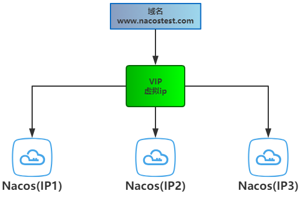
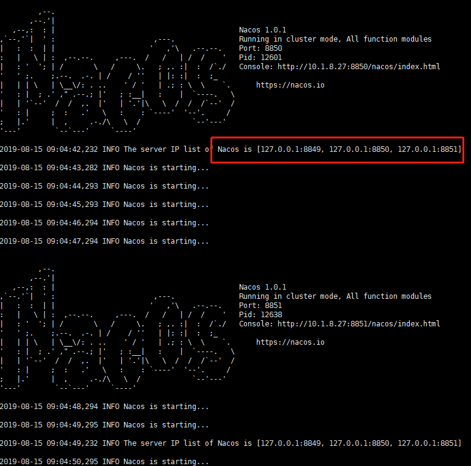
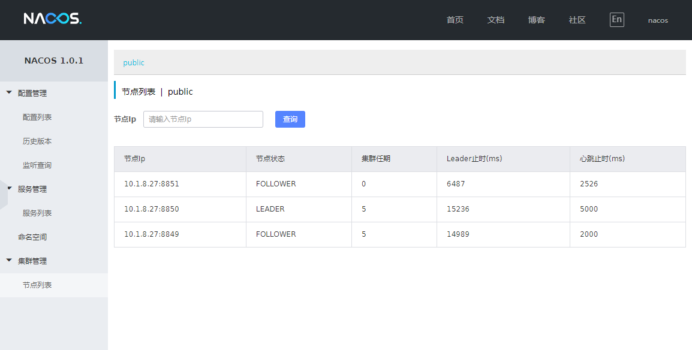
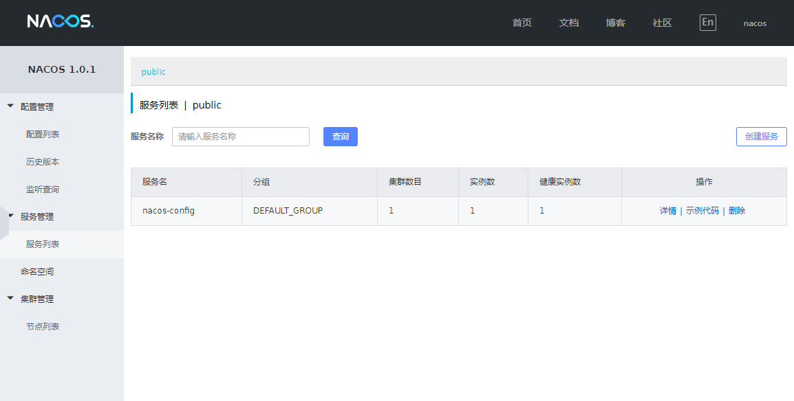

前面的系列文章已经介绍了Nacos的如何接入SpringCloud，以及Nacos的基本使用方式
之前的文章中都是基于单机模式部署进行讲解的，本文对Nacos的集群部署方式进行说明
10.1.8.27)请提前下载Nacos-server：1.0.1压缩包并解压至相应目录
本次的Nacos-server在linux服务器上进行启动。
Nacos文档中提供了三种集群部署方案
http://ip1:port/openAPI 直连ip模式：
http://Vip:port/openAPI 挂载虚拟IP模式：
http://www.nacostest.com:port/openAPI 挂载虚拟IP+域名模式：

这三种方案都是为了尽可能实现高可用，后两种方案除了基本的部署流程外更多侧重于实现高可用的工作上
本文以第一种ip+端口的方式为大家介绍集群部署方式
当然ip+端口也有多种部署方式
无论怎么部署，部署方式都是一样的，这里我以1ip+3端口+Nginx的方式进行集群搭建
1、修改Nacos-server目录conf/下的application.properties文件，添加mysql数据源
2、修改集群配置
ip和端口的规划如下:
| ip | 端口 |
|---|---|
| 10.1.8.27 | 8849 |
| 10.1.8.27 | 8850 |
| 10.1.8.27 | 8851 |
修改conf/下的cluster.conf.example文件，将其命名为cluster.conf，内容如下
# ip:port
10.1.8.27:8849
10.1.8.27:8850
10.1.8.27:8851注：一定要记得将配置文件重命名为
cluster.conf, 最好用实际ip，而非127.0.0.1，否则会出现问题
3、修改启动脚本
我们要在单台服务器上启动多个Nacos实例，要保证三个实例为不同的端口，这里我们可以修改启动脚本
定位到export FUNCTION_MODE="all"这一行，修改脚本内容，使其支持以-p传入端口参数
export MODE="cluster"
export FUNCTION_MODE="all"
# 新加
export SERVER_PORT="8848"
while getopts ":m:f:p:" opt
do
case $opt in
m)
MODE=$OPTARG;;
f)
FUNCTION_MODE=$OPTARG;;
# 新加
p)
SERVER_PORT=$OPTARG;;
?)
echo "Unknown parameter"
exit 1;;
esac
done
# 新加
JAVA_OPT="${JAVA_OPT} -Dserver.port=${SERVER_PORT}"
相应的，修改shutdown脚本，使其可接收参数
# 新加内容
PORT=$1
if [ ! $PORT ]; then
echo "please select stop port!" >&2
exit 1
fi
# 添加PORT过滤
pid=`ps ax | grep -i 'nacos.nacos' |grep java |grep ${PORT} | grep -v grep | awk '{print $1}'`
# 后边省略...执行如下三条命令
bash startup.sh -p 8849
bash startup.sh -p 8850
bash startup.sh -p 8851
如果你的机器不能同时启动3个实例，检查是否内存不够了，可以适当调整JVM参数
调整启动脚本中JAVA_OPT="${JAVA_OPT} -server -Xms2g -Xmx2g -Xmn1g -XX:MetaspaceSize=128m -XX:MaxMetaspaceSize=320m中的-Xms -Xmx -Xmn
启动成功后会打印如下一句话：
nacos is starting，you can check the /usr/local/nacos/nacos/logs/start.out
查看该目录下的start.out文件，可以看到如下日志

此时，多节点的集群雏形已经搭建好了，可以试着访问Nacos后台
http://ip:8849/nacos/index.html
http://ip:8850/nacos/index.html
http://ip:8851/nacos/index.html
不出意外,可以正常访问到Nacos控制台

从图上可以看到集群节点共有三个，其中端口8850为leader
完成上面的配置后，已经基本完成集群搭建的90%了
这里我们可以通过Nginx配置，为Nacos提供统一的入口，来实现一个简单的负载均衡
Nginx配置如下
upstream nacos-server {
server 127.0.0.1:8849;
server 127.0.0.1:8850;
server 127.0.0.1:8851;
}
server {
listen 8848;
server_name localhost;
location /nacos/ {
proxy_pass http://nacos-server/nacos/;
}
}
执行命令 sudo nginx启动nginx
通过8848端口访问Nacos后台，此时Nginx会将请求分发至nacos-server下的地址中，这里默认的分发策略是线性轮询
这里继续使用之前的Demo项目（Nacos（四））
1、修改下项目配置文件bootstarp.yml
spring:
application:
name: nacos-config
cloud:
nacos:
discovery:
server-addr: 10.1.8.27:8848
config:
server-addr: 10.1.8.27:8848
prefix: ${spring.application.name}
file-extension: yml注：主要是修改注册中心和配置中新的地址，记得替换成你的服务器地址哦
2、启动前确保已经向Nacos中添加配置文件，如果已经添加可以忽略
在公共空间(public)中新建一个配置文件DataID: nacos-config.yml, 配置内容如下：
server:
port: 9989
nacos:
config: 配置文件已持久化到数据库中...3、启动Nacos-config项目
启动成功后检查日志和Nacos控制台
注册成功的日志如下：
09:37:19.366 [main] [nacos] [64] INFO o.s.c.a.n.r.NacosServiceRegistry - nacos registry, nacos-config 10.1.8.71:9989 register finished
控制台中可以看到服务已经注册

浏览器请求nacos-config中的接口，查看是否可以读取配置
访问：http://127.0.0.1:9989/getValue 返回：配置文件和服务信息已持久化到数据库中...
集群的部署方式就介绍完了，文中的集群部署方式不是最优的方式
实际生产环境下，至少应该保证各个Nacos节点位于不同服务器,以实现更好的隔离和容灾
这里将我在配置集群时出现的一些问题和解决方式进行说明
1、在集群搭建完成后，启动nacos客户端进行服务注册时报错了，提示我服务端没有启动，稍后再试，如下：
code:503 msg: server is STARTING now, please try again later!
一脸懵B，Nacos后台都可以访问的鸭，为啥说我没启动。翻阅Nacos-server的源码后
nacos-consloe模块启动成功nacos-naming模块可能启动失败了参考了github中的#770-issues
必须保证`InetAddress.getLocalHost().getHostAddress()`或者`hostname -i`打印的结果是
192.xxx.xxx.xxx而不是`127.0.0.1`才行解决办法如下：
yourip hostname，例如：10.1.8.27 lars127.0.0.1Nacos的集群部署基本就介绍完了，官方推荐的三种方式，他们的基本部署思路和方式都大同小异，只不过在高可用上有所不同，挑选你适合的方式动手搭建集群试试吧。